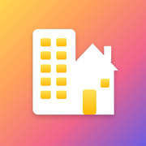

Le nostre app
App per iPhone costruite per fare bene una cosa sola, senza raccogliere più dati del necessario.
Skurda
Abbonamenti, bollette e spese ricorrenti sempre sotto controllo — e ora anche le spese di tutti i giorni, in automatico, da scontrino o a mano. Promemoria prima di ogni addebito, budget del mese e report di risparmio, con i dati che restano sul tuo iPhone.

HomeOffice
Giorni in ufficio e smart working con un tocco: sai sempre se rispetti l'obiettivo mensile di presenze e quello del premio di risultato, con ferie, malattie e festività escluse in automatico. Disponibile su App Store.
Piano di Cura
Visite, esami, ritiro dei farmaci e terapie in un unico posto, con le cose da fare prima di ogni appuntamento e promemoria che tornano finché non le hai fatte. I dati restano sul tuo iPhone e nel tuo iCloud. In arrivo su App Store entro fine 2026.